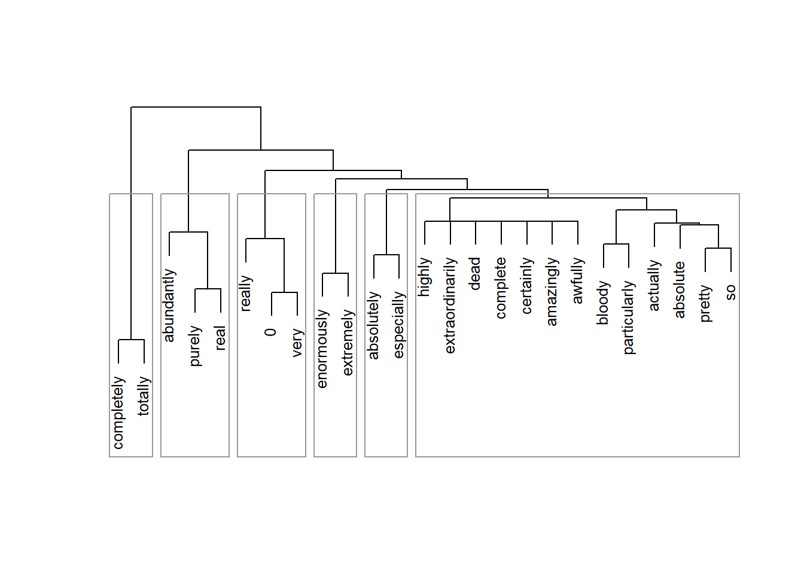
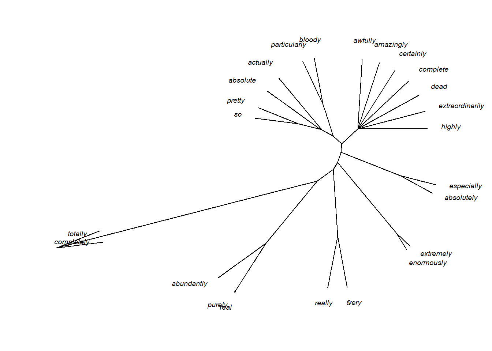

Classification
UQ SLC Digital Team
2019-11-24

1 Introduction
This tutorial introduces classification using R. The entire code for the sections below can be downloaded here.
Classification methods are used to find groups or patterns in data or to predict group membership. As such, they are widely used and applied in machine learning. For linguists, classification is not only common when it comes to phylogenetics but also in annotation-based procedures such as part-of-speech tagging and syntactic parsing.
2 Preparation and session set up
As all calculations and visualizations in this tutorial rely on “R”, it is necessary to install R and RStudio. If these programs (or, in the case of R, environments) are not already installed on your machine, please search for them in your favourite search engine and add the term “download”. Open any of the first few links and follow the installation instructions (they are easy to follow, do not require any specifications, and are pretty much self-explanatory).
In addition, certain libraries (or packages) need to be installed so that the scripts shown below are executed without errors. Before turning to the code below, please install the libraries by running the code below this paragraph. If you have already installed the libraries mentioned below, then you can skip ahead ignore this section. To install the necessary libraries, simply run the following code - it may take some time (between 1 and 5 minutes to install all of the libraries so you do not need to worry if it takes some time).
# clean current workspace
rm(list=ls(all=T))
# set options
options(stringsAsFactors = F) # no automatic data transformation
options("scipen" = 100, "digits" = 4) # supress math annotation
# install libraries
install.packages(c("cluster", "factoextra", "cluster",
"seriation", "pvclust", "ape", "vcd",
"exact2x2", "factoextra", "seriation",
"NbClust", "pvclust"))Once you have installed R, R-Studio, and have also initiated the session by executing the code shown above, you are good to go.
3 Cluster Analysis
The most common method in linguistics that is sued to detect groups in data are cluster analyses. Cluster analyses are common in linguistics because they not only detect commonalities based on the frequency or occurrence of features but they also allow to visualize when splits between groups have occurred and are thus the method of choice in historical linguistics to determine and show genealogical relationships.
3.1 Underlying Concepts
The next section focuses on the basic idea that underlies all cluster analyses. WE will have a look at some very basic examples to highlight and discuss the principles that cluster analyses rely on.
The underlying idea of cluster analysis is very simple and rather intuitive as we ourselves perform cluster analyses every day in our lives. This is so because we group things together under certain labels and into concepts. The first example used to show this, deals with types of trees and how we group these types of trees based on their outward appearance.
Imagine you see six trees representing different types of trees: a pine tree, a fir tree, an oak tree, a beech tree, a phoenix palm tree, and a nikau palm tree. Now, you were asked to group these trees according to similarity. Have a look at the plot below and see whether you would have come up with a similar type of grouping.

An alternative way to group the trees would be the following.

In this display, conifers and broad-leaf trees are grouped together because there are more similar to each other compared to palm trees. This poses the question of what is meant by similarity. Consider the display below.

Are the red and the blue line more similar because they have the same shape or are the red and the black line more similar because they are closer together? There is no single correct answer here. Rather the plot intends to raise awareness about the fact that how cluster analyses group data depends on how similarity is defined in the respective algorithm.
Let’s consider another example to better understand how cluster analyses determine which data points should be merged when. Imagine you have five students and want to group them together based on their overall performance in school. The data that you rely on are their grades in math, music, and biology (with 1 being the best grade and 6 being the worst).
| Math | Music | Biology | |
|---|---|---|---|
| StudentA | 2 | 3 | 2 |
| StudentB | 1 | 3 | 2 |
| StudentC | 1 | 2 | 1 |
| StudentD | 2 | 4 | 4 |
| StudentE | 3 | 4 | 3 |
The first step in determining the similarity among students is to create a distance matrix.
diststudents <- dist(students, method = "manhattan") # create a distance matrixThe distance matrix below shows that Student A and Student B only differ by one grade. Student B and Student C differ by 2 grades. Student A and Student C differ by 3 grades and so on.
| StudentA | StudentB | StudentC | StudentD | |
|---|---|---|---|---|
| StudentB | 1 | |||
| StudentC | 3 | 2 | ||
| StudentD | 3 | 4 | 6 | |
| StudentE | 3 | 4 | 6 | 2 |
Based on this distance matrix, we can now implement a cluster analysis in R.
3.2 Cluster Analysis: Numeric Data
To create a simple cluster object in R, we use the “hclust” function from the “cluster” package. The resulting object is then plotted to create a dendrogram which shows how students have been amalgamated (combined) by the clustering algorithm (which, in the present case, is called “ward.D”).
# activate library
library("cluster")
library("factoextra")
library("seriation")
library("NbClust")
library("pvclust")
# create hierarchical cluster object with ward.D as linkage method
clusterstudents <- hclust(diststudents, method="ward.D")
# plot result as dendrogram
plot(clusterstudents, hang = 0)
Let us have a look at how the clustering algorithm has amalgamated the students. The amalgamation process takes the distance matrix from above as a starting point and, in a first step, has merged Student A and Student B (because they were the most similar students in the data based on the distance matrix). After collapsing Student A and Student B, the resulting distance matrix looks like the distance matrix below (notice that Student A and Student B now form a cluster that is represented by the means of the grades of the two students).
students2 <- matrix(c(1.5, 3, 2, 1, 2, 1, 2, 4, 4, 3, 4, 3),
nrow = 4, byrow = T)
students2 <- as.data.frame(students2)
rownames(students2) <- c("Cluster1", "StudentC", "StudentD", "StudentE")
diststudents2 <- dist(students2, method = "manhattan")| Cluster 1 | Student C | Student D | |
|---|---|---|---|
| Student C | 2.5 | ||
| Student D | 3.5 | 6.0 | |
| Student E | 3.5 | 6.0 | 2.0 |
The next lowest distance now is 2.0 between Student D and Student E which means that these two students are merged next. The resulting distance matrix is shown below.
students3 <- matrix(c(1.5,3,2,1,2,1,2.5,4,3.5),
nrow = 3, byrow = T)
students3 <- as.data.frame(students3)
rownames(students3) <- c("Cluster1", "StudentC", "Cluster2")
diststudents3 <- dist(students3,
method = "manhattan")| Cluster 1 | Student C | |
|---|---|---|
| Student C | 2.5 | |
| Cluster 2 | 3.5 | 6.0 |
Now, the lowest distance value occurs between Cluster 1 and Student C. Thus, Student C and Cluster 1 are merged. In the final step, the Cluster 2 is merged with the new cluster encompassing Student C and Cluster 1. This amalgamation process can then be displayed visually as a dendrogram (see above).
How and which elements are merged depends on the what is understood as distance. Since “distance” is such an important concept in cluster analyses, we will briefly discuss this notion to understand why there are so many different types of clustering algorithms and this cluster analyses.
3.2.1 Distances
To understand how a cluster analysis determines to which cluster a given data point belongs, we need to understand what different distance measures represent. Have a look at the Figure below which visually represents three different ways to conceptualize distance.
par(mar=c(1,1,1,1)) # define margine width of the plot
x <- c(1,5) # define an x value
y <- c(1,5) # define a y value
plot(x, y,
pch = 20,
cex = 1,
axes = F,
las = 1,
xlab = "",
ylab = "",
xlim = c(0,7),
ylim = c(0,10))
text(0.5, .5, "Point A", cex = 1)
text(5, 5.5, "Point B", cex = 1)
lines(x = c(1, 5), y = c(1, 5), type = "l", lty = 3, lwd = 2, col = "red")
lines(x = c(1, 5), y = c(1, 1), type = "l", lty = 2, lwd = 2, col = "blue")
lines(x = c(5, 5), y = c(1, 5), type = "l", lty = 4, lwd = 2, col = "green")
lines(x = c(.9, 5), y = c(.9, .9), type = "l", lty = 4, lwd = 2, col = "green")
legend("topleft", inset=.05, title="", bty = "n", lty = c(3, 2, 4), lwd = 2,
c("euclidean distance", "maximum distance", "manhatten distance"), col=c("red", "blue", "green"), horiz=F, cex = 1)
par(mar=c(5.1,4.1,4.1,2.1))The Figure above depicts three ways to measure distance: the “eucledian distance” represents the distance between points as the hypothenuse of the x- and y-axis distances while the “maximum distance” represents distance as the longer distance of either the distance on the x- or the y-axis. The manhatten distance (or block distance) is the sum of the distances on the x- and the y-axis.
We will now turn to another example in order to delve a little deeper into how clustering algorithms work. In this example, we will find cluster of varieties of English based on the relative frequency of selected non-standard features (such as the relative frequencies of cleft constructions and tag questions). As a first step, we generate some fictional data set for this analysis.
# generate data
IrishEnglish <- round(sqrt((rnorm(10, 9.5, .5))^2), 3)
ScottishEnglish <- round(sqrt((rnorm(10, 9.3, .4))^2), 3)
BritishEnglish <- round(sqrt((rnorm(10, 6.4, .7))^2), 3)
AustralianEnglish <- round(sqrt((rnorm(10, 6.6, .5))^2), 3)
NewZealandEnglish <- round(sqrt((rnorm(10, 6.5, .4))^2), 3)
AmericanEnglish <- round(sqrt((rnorm(10, 4.6, .8))^2), 3)
CanadianEnglish <- round(sqrt((rnorm(10, 4.5, .7))^2), 3)
JamaicanEnglish <- round(sqrt((rnorm(10, 1.4, .2))^2), 3)
PhillipineEnglish <- round(sqrt((rnorm(10, 1.5, .4))^2), 3)
IndianEnglish <- round(sqrt((rnorm(10, 1.3, .5))^2), 3)
clus <- data.frame(IrishEnglish, ScottishEnglish, BritishEnglish,
AustralianEnglish, NewZealandEnglish, AmericanEnglish,
CanadianEnglish, JamaicanEnglish, PhillipineEnglish, IndianEnglish)
# add row names
rownames(clus) <- c("nae_neg", "like", "clefts", "tags", "youse", "soitwas", "dt", "nsr", "invartag", "wh_cleft")
summary(clus) # inspect results## IrishEnglish ScottishEnglish BritishEnglish AustralianEnglish
## Min. : 8.947 Min. :8.679 Min. :5.378 Min. :5.771
## 1st Qu.: 9.756 1st Qu.:9.171 1st Qu.:5.881 1st Qu.:6.053
## Median : 9.904 Median :9.472 Median :6.425 Median :6.582
## Mean : 9.876 Mean :9.372 Mean :6.468 Mean :6.381
## 3rd Qu.:10.143 3rd Qu.:9.680 3rd Qu.:6.672 3rd Qu.:6.633
## Max. :10.505 Max. :9.785 Max. :7.907 Max. :6.917
## NewZealandEnglish AmericanEnglish CanadianEnglish JamaicanEnglish
## Min. :5.906 Min. :3.842 Min. :3.374 Min. :1.194
## 1st Qu.:6.394 1st Qu.:4.223 1st Qu.:3.978 1st Qu.:1.313
## Median :6.553 Median :4.757 Median :4.191 Median :1.571
## Mean :6.561 Mean :4.774 Mean :4.292 Mean :1.499
## 3rd Qu.:6.889 3rd Qu.:5.039 3rd Qu.:4.377 3rd Qu.:1.677
## Max. :7.143 Max. :6.470 Max. :5.633 Max. :1.735
## PhillipineEnglish IndianEnglish
## Min. :1.012 Min. :0.637
## 1st Qu.:1.236 1st Qu.:1.135
## Median :1.494 Median :1.397
## Mean :1.541 Mean :1.455
## 3rd Qu.:1.862 3rd Qu.:1.872
## Max. :2.178 Max. :2.164As a next step, we create a cluster object based on the data we have just generated.
# clean data
clust <- t(clus) # transpose data
clust <- na.omit(clust) # remove missing values
clusts <- scale(clust) # standardize variables
clusts <- as.matrix(clusts) # convert into matrix
clust## nae_neg like clefts tags youse soitwas dt nsr
## IrishEnglish 9.972 9.473 10.200 9.885 9.738 9.810 10.303 8.947
## ScottishEnglish 9.785 9.607 8.679 9.695 9.180 9.690 9.651 9.168
## BritishEnglish 6.690 7.526 5.714 6.227 5.766 7.907 6.339 6.619
## AustralianEnglish 6.175 6.607 6.917 5.859 6.597 5.771 6.642 6.661
## NewZealandEnglish 6.819 5.975 6.956 6.393 6.462 5.906 6.644 6.913
## AmericanEnglish 4.897 4.161 5.086 3.842 4.842 4.411 3.971 4.672
## CanadianEnglish 3.374 3.798 5.633 4.384 3.954 4.302 4.355 4.081
## JamaicanEnglish 1.557 1.341 1.712 1.304 1.585 1.735 1.629 1.194
## PhillipineEnglish 1.929 1.199 1.515 1.686 1.921 2.178 1.012 1.473
## IndianEnglish 0.637 1.958 1.310 1.877 1.375 1.418 0.878 1.076
## invartag wh_cleft
## IrishEnglish 10.505 9.923
## ScottishEnglish 9.336 8.931
## BritishEnglish 5.378 6.510
## AustralianEnglish 6.012 6.566
## NewZealandEnglish 6.395 7.143
## AmericanEnglish 6.470 5.393
## CanadianEnglish 4.052 4.982
## JamaicanEnglish 1.693 1.243
## PhillipineEnglish 1.149 1.348
## IndianEnglish 1.857 2.164We now assess if data is clusterable by testing whether or not the data includes nonrandom structures. To means to determine whether the data contains nonrandomness, we calculate the Hopkins statistic which informs how similar the data is to a random distribution. If the values of the Hopkins statistic are higher than 0.5 then this indicates that the data is random and that there are no inherent clusters. However, if the Hopkins statistic is close to 0, then the data is clusterable. The “n” in the “get_clust_tendency” functions represents the maximum number of clusters to be tested which should be number of predictors in the data.
library("factoextra") # load library to extract cluster tendency
clusttendency <- get_clust_tendency(clusts, # apply get_clust_tendency to cluster object
n = 9, # define number of points from sampe speace
gradient = list(low = "steelblue", # define color for low values
high = "white")) # define color for high values
clusttendency[1]## $hopkins_stat
## [1] 0.2286675As the Hopkins statistic above shows, there is sufficient structure in the data and we can assume that there are actual clusters in the data. Next, we create a distance matrix based on Euclidian distances.
clustd <- dist(clusts, # create distance matrix
method = "euclidean") # use eucledian (!) distance
round(clustd, 2) # display distance matrix## IrishEnglish ScottishEnglish BritishEnglish AustralianEnglish
## ScottishEnglish 0.76
## BritishEnglish 3.59 3.00
## AustralianEnglish 3.57 3.08 0.94
## NewZealandEnglish 3.39 2.91 1.02 0.41
## AmericanEnglish 5.18 4.72 2.14 1.81
## CanadianEnglish 5.65 5.18 2.44 2.18
## JamaicanEnglish 8.46 7.95 5.08 4.96
## PhillipineEnglish 8.43 7.90 5.02 4.93
## IndianEnglish 8.51 8.00 5.12 5.01
## NewZealandEnglish AmericanEnglish CanadianEnglish
## ScottishEnglish
## BritishEnglish
## AustralianEnglish
## NewZealandEnglish
## AmericanEnglish 1.93
## CanadianEnglish 2.35 1.02
## JamaicanEnglish 5.14 3.40 2.91
## PhillipineEnglish 5.10 3.39 2.89
## IndianEnglish 5.19 3.44 2.94
## JamaicanEnglish PhillipineEnglish
## ScottishEnglish
## BritishEnglish
## AustralianEnglish
## NewZealandEnglish
## AmericanEnglish
## CanadianEnglish
## JamaicanEnglish
## PhillipineEnglish 0.37
## IndianEnglish 0.57 0.67Below are other methods to cerate distance matrices.
# create distance matrix (eucledian method: not good when dealing with many dimensions)
clustd <- dist(clusts, method = "euclidean")
# create distance matrix (maximum method: here the difference between points dominates)
clustd_maximum <- round(dist(clusts, method = "maximum"), 2)
# create distance matrix (manhattan method: most popular choice)
clustd_manhatten <- round(dist(clusts, method = "manhattan"), 2)
# create distance matrix (canberra method: for count data only - focuses on small differences and neglects larger differences)
clustd_canberra <- round(dist(clusts, method = "canberra"), 2)
# create distance matrix (binary method: for binary data only!)
clustd_binary <- round(dist(clusts, method = "binary"), 2)
# create distance matrix (minkowski method: is not a true distance measure)
clustd_minkowski <- round(dist(clusts, method = "minkowski"), 2)
# distance method for words: daisy (other possible distances are "manhattan" and "gower")
library(cluster)
clustd_daisy <- round(daisy(clusts, metric = "euclidean"), 2) If you call the individual distance matrices, you will see that depending on which distance measure is used, the distance matrices differ dramatically! Have a look at the distance matrix created using the manhatten metric and compare it to the distance matrix created using the Euclidian metric (see above).
clustd_maximum ## IrishEnglish ScottishEnglish BritishEnglish AustralianEnglish
## ScottishEnglish 0.50
## BritishEnglish 1.62 1.25
## AustralianEnglish 1.42 1.27 0.69
## NewZealandEnglish 1.30 1.22 0.65 0.20
## AmericanEnglish 1.95 1.89 1.13 0.79
## CanadianEnglish 2.04 1.94 1.18 0.89
## JamaicanEnglish 2.86 2.71 1.99 1.78
## PhillipineEnglish 2.96 2.66 2.00 1.77
## IndianEnglish 2.91 2.78 2.10 1.83
## NewZealandEnglish AmericanEnglish CanadianEnglish
## ScottishEnglish
## BritishEnglish
## AustralianEnglish
## NewZealandEnglish
## AmericanEnglish 0.82
## CanadianEnglish 1.05 0.76
## JamaicanEnglish 1.94 1.51 1.28
## PhillipineEnglish 1.91 1.68 1.35
## IndianEnglish 1.90 1.46 1.41
## JamaicanEnglish PhillipineEnglish
## ScottishEnglish
## BritishEnglish
## AustralianEnglish
## NewZealandEnglish
## AmericanEnglish
## CanadianEnglish
## JamaicanEnglish
## PhillipineEnglish 0.18
## IndianEnglish 0.30 0.39Next, we create a distance plot using the “distplot” function. If the distance plot shows different regions (non-random, non-uniform grey areas) then clustering the data is permittable as the data contains actual structures.
# load library
library(seriation)
# create distance plot
dissplot(clustd) 
The most common method for clustering is called “ward.D” or “ward.D2”. Both of these linkage functions seek to minimize variance. This means that they cluster in a way that the amount of variance is at a minimum (comparable to the regression line in an ordinary least squares (OLS) design).
# create cluster object
cd <- hclust(clustd, method="ward.D2")
# display dendogram
plot(cd, hang = -1) 
We will briefly go over some other, alternative linkage methods. Which linkage method is and should be used depends on various factors, for example, the type of variables (nominal versus numeric) or whether the focus should be placed on commonalities or differences.
# single linkage: cluster with nearest data point
cd_single <- hclust(clustd, method="single")
# create cluster object (ward.D linkage)
cd_wardd <- hclust(clustd, method="ward.D")
# create cluster object (ward.D2 linkage):
# cluster in a way to achieve minimum variance
cd_wardd2 <- hclust(clustd, method="ward.D2")
# average linkage: cluster with closest mean
cd_average <- hclust(clustd, method="average")
# mcquitty linkage
cd_mcquitty <- hclust(clustd, method="mcquitty")
# median linkage: cluster with closest median
cd_median <- hclust(clustd, method="median")
# centroid linkage: cluster with closest prototypical point of target cluster
cd_centroid <- hclust(clustd, method="centroid")
# complete linkage: cluster with nearest/furthest data point of target cluster
cd_complete <- hclust(clustd, method="complete") Now, we determine the optimal number of clusters based on silhouette widths which shows the ratio of internal similarity of clusters against the similarity between clusters. If the silhouette widths have values lower than .2 then this indicates that clustering is not appropriate (Levshina 2015, 311). The function below displays the silhouette width values of 2 to 8 clusters.
optclus <- sapply(2:8, function(x) summary(silhouette(cutree(cd, k = x), clustd))$avg.width)
optclus # inspect results## [1] 0.5737982 0.6702516 0.6960813 0.6182457 0.5129873 0.3602470 0.1951664optnclust <- which(optclus == max(optclus)) # determine optimal number of clusters
groups <- cutree(cd, k=optnclust) # cut tree into optimal number of clustersThe optimal number of clusters is the cluster solution with the highest silhouette width. We cut the tree into the optimal number of clusters and plot the result.
groups <- cutree(cd, k=optnclust) # cut tree into optimal clusters
plot(cd, hang = -1, cex = .75) # plot result as dendrogram
rect.hclust(cd, k=optnclust, border="red") # draw red borders around clusters
In a next step, we aim to determine which factors are particularly important for the clustering - this step is comparable to measuring the effect size in inferential designs.
# which factors are particularly important
celtic <- clusts[c(1,2),]
others <- clusts[-c(1,2),]
# calculate column means
celtic.cm <- colMeans(celtic)
others.cm <- colMeans(others)
# calcualte difference between celtic and other englishes
diff <- celtic.cm - others.cm
sort(diff, decreasing = F)## nsr wh_cleft clefts like nae_neg dt soitwas youse
## 1.615752 1.650247 1.662384 1.728477 1.780305 1.790937 1.791074 1.805492
## invartag tags
## 1.831312 1.889550plot(sort(diff), # y-values
1:length(diff), # x-values
type= "n", # plot type (empty)
cex.axis = .75, # axis font size
cex.lab = .75, # label font size
xlab ="Prototypical for Non-Celtic Varieties (Cluster 2) <-----> Prototypical for Celtic Varieties (Cluster 1)", # x-axis label
yaxt = "n", # no y-axis tick marks
ylab = "") # no y-axis label
text(sort(diff), 1:length(diff), names(sort(diff)), cex = .75) # plot text into plot
Outer <- clusts[c(6:8),] # data of outer circle varieties
Inner <- clusts[-c(6:8),] # data of inner circle varieties
Outer.cm <- colMeans(Outer) # column means for outer circle
Inner.cm <- colMeans(Inner) # column means for inner circle
diff <- Outer.cm - Inner.cm # difference between inner and outer circle
sort(diff, decreasing = F) # order difference between inner and outer circle## like tags soitwas nae_neg nsr youse dt
## -0.9320575 -0.8954897 -0.8442660 -0.8266381 -0.8193682 -0.8037952 -0.7722403
## wh_cleft clefts invartag
## -0.7284876 -0.5738573 -0.5476491plot( # start plot
sort(diff), # y-values
1:length(diff), # x-values
type= "n", # plot type (empty)
cex.axis = .75, # axis font size
cex.lab = .75, # label font size
xlab ="Prototypical for Inner Circle Varieties (Cluster 2) <-----> Prototypical for Outer Circle Varieties (Cluster 1)", # x-axis label
yaxt = "n", # no y-axis tick marks
ylab = "") # no y-axis label
text(sort(diff), 1:length(diff), names(sort(diff)), cex = .75) # plot text into plot
We see that discourse like is typical for other varieties and that the use of youse as 2nd person plural pronoun and invariant tags are typical for Celtic Englishes.
We will now test whether the cluster is justified by validating the cluster solution using bootstrapping.
library(pvclust) # activate library
res.pv <- pvclust(clus, # apply pvclust method to clus data
method.dist="euclidean", # use eucledian distance
method.hclust="ward.D2", # use ward.d2 linkage
nboot = 100) # use 100 bootstrap runs## Bootstrap (r = 0.5)... Done.
## Bootstrap (r = 0.6)... Done.
## Bootstrap (r = 0.7)... Done.
## Bootstrap (r = 0.8)... Done.
## Bootstrap (r = 0.9)... Done.
## Bootstrap (r = 1.0)... Done.
## Bootstrap (r = 1.1)... Done.
## Bootstrap (r = 1.2)... Done.
## Bootstrap (r = 1.3)... Done.
## Bootstrap (r = 1.4)... Done.The clustering provides approximately unbiased p-values and bootstrap probability value (see ???).
plot(res.pv,
cex = .75)
pvrect(res.pv)
We can alsouse other libraries to customize the dendrograms.
library(ape) # load package ape
plot(as.phylo(cd), # plot cluster object
cex = 0.75, # .75 font size
label.offset = .5) # .5 label offset
One useful customization is to display an unrooted rather than a rooted tree diagram.
# plot as unrooted tree
plot(as.phylo(cd), # plot cluster object
type = "unrooted", # plot as unrooted tree
cex = .75, # .75 font size
label.offset = 1) # .5 label offset
3.3 Cluster Analysis: Nominal Data
So far, all analyses were based on numeric data. However, especially when working with language data, the data is nominal or categorical rather than numeric. The following will thus show to implement a clustering method for nominal data.
In a first step, we will create a simple data set representing the presence and absence of features across varities of English.
# generate data
IrishEnglish <- c(1,1,1,1,1,1,1,1,1,1)
ScottishEnglish <- c(1,1,1,1,1,1,1,1,1,1)
BritishEnglish <- c(0,1,1,1,0,0,1,0,1,1)
AustralianEnglish <- c(0,1,1,1,0,0,1,0,1,1)
NewZealandEnglish <- c(0,1,1,1,0,0,1,0,1,1)
AmericanEnglish <- c(0,1,1,1,0,0,0,0,1,0)
CanadianEnglish <- c(0,1,1,1,0,0,0,0,1,0)
JamaicanEnglish <- c(0,0,1,0,0,0,0,0,1,0)
PhillipineEnglish <- c(0,0,1,0,0,0,0,0,1,0)
IndianEnglish <- c(0,0,1,0,0,0,0,0,1,0)
clus <- data.frame(IrishEnglish, ScottishEnglish, BritishEnglish,
AustralianEnglish, NewZealandEnglish, AmericanEnglish,
CanadianEnglish, JamaicanEnglish, PhillipineEnglish, IndianEnglish)
# add row names
rownames(clus) <- c("nae_neg", "like", "clefts", "tags", "youse", "soitwas", "dt", "nsr", "invartag", "wh_cleft")
# convert into factors
clus <- apply(clus, 1, function(x){
x <- as.factor(x) })
# inspect data
clus## nae_neg like clefts tags youse soitwas dt nsr invartag
## IrishEnglish "1" "1" "1" "1" "1" "1" "1" "1" "1"
## ScottishEnglish "1" "1" "1" "1" "1" "1" "1" "1" "1"
## BritishEnglish "0" "1" "1" "1" "0" "0" "1" "0" "1"
## AustralianEnglish "0" "1" "1" "1" "0" "0" "1" "0" "1"
## NewZealandEnglish "0" "1" "1" "1" "0" "0" "1" "0" "1"
## AmericanEnglish "0" "1" "1" "1" "0" "0" "0" "0" "1"
## CanadianEnglish "0" "1" "1" "1" "0" "0" "0" "0" "1"
## JamaicanEnglish "0" "0" "1" "0" "0" "0" "0" "0" "1"
## PhillipineEnglish "0" "0" "1" "0" "0" "0" "0" "0" "1"
## IndianEnglish "0" "0" "1" "0" "0" "0" "0" "0" "1"
## wh_cleft
## IrishEnglish "1"
## ScottishEnglish "1"
## BritishEnglish "1"
## AustralianEnglish "1"
## NewZealandEnglish "1"
## AmericanEnglish "0"
## CanadianEnglish "0"
## JamaicanEnglish "0"
## PhillipineEnglish "0"
## IndianEnglish "0"Now that we have our data, we will create a distance matrix but in contrast to previous methods, we will use a different distance measure that takes into account that we are dealing with nominal (or binary) data.
# clean data
clusts <- as.matrix(clus)
# create distance matrix
clustd <- dist(clusts, method = "binary") # create a distance object with binary (!) distance
# display distance matrix
round(clustd, 2)## IrishEnglish ScottishEnglish BritishEnglish AustralianEnglish
## ScottishEnglish 0.00
## BritishEnglish 0.40 0.40
## AustralianEnglish 0.40 0.40 0.00
## NewZealandEnglish 0.40 0.40 0.00 0.00
## AmericanEnglish 0.60 0.60 0.33 0.33
## CanadianEnglish 0.60 0.60 0.33 0.33
## JamaicanEnglish 0.80 0.80 0.67 0.67
## PhillipineEnglish 0.80 0.80 0.67 0.67
## IndianEnglish 0.80 0.80 0.67 0.67
## NewZealandEnglish AmericanEnglish CanadianEnglish
## ScottishEnglish
## BritishEnglish
## AustralianEnglish
## NewZealandEnglish
## AmericanEnglish 0.33
## CanadianEnglish 0.33 0.00
## JamaicanEnglish 0.67 0.50 0.50
## PhillipineEnglish 0.67 0.50 0.50
## IndianEnglish 0.67 0.50 0.50
## JamaicanEnglish PhillipineEnglish
## ScottishEnglish
## BritishEnglish
## AustralianEnglish
## NewZealandEnglish
## AmericanEnglish
## CanadianEnglish
## JamaicanEnglish
## PhillipineEnglish 0.00
## IndianEnglish 0.00 0.00As before, we can now use hierarchical clustering to display the results as a dendrogram
# create cluster object (ward.D2 linkage) : cluster in a way to achieve minimum variance
cd <- hclust(clustd, method="ward.D2")
# plot result as dendrogram
plot(cd, hang = -1) # display dendogram
In a next step, we want to determine which features are particularly distinctive for one cluster (the “Celtic” cluster containing Irish and Scottish English).
# create factor with celtic varieties on one hand and other varieties on other
cluster <- as.factor(ifelse(as.character(rownames(clusts)) == "IrishEnglish", "1",
ifelse(as.character(rownames(clusts)) == "ScottishEnglish", "1", "0")))
# load library
library(vcd)
clsts.df <- as.data.frame(clusts)
# determine significance
library(exact2x2)
pfish <- fisher.exact(table(cluster, clsts.df$youse))
pfish[[1]]## [1] 0.02222222# determine effect size
assocstats(table(cluster, clsts.df$youse))## X^2 df P(> X^2)
## Likelihood Ratio 10.008 1 0.0015586
## Pearson 10.000 1 0.0015654
##
## Phi-Coefficient : 1
## Contingency Coeff.: 0.707
## Cramer's V : 1assocstats(table(cluster, clsts.df$like))## X^2 df P(> X^2)
## Likelihood Ratio 1.6323 1 0.20139
## Pearson 1.0714 1 0.30062
##
## Phi-Coefficient : 0.327
## Contingency Coeff.: 0.311
## Cramer's V : 0.327Clustering is a highly complex topic and there many more complexities to it. However, this should have helped to get you started.
4 Vector Space Models
Vector Space Models are particularly useful when dealing with language data as they provide very accurate estimates of “semantic” similarity based on word embeddings (or co-occurrence profiles). Word embeddings refer to the vectors which hold the frequency information about how frequently a given word has cooccurred with other words. If the ordering of co-occurring words remains constant, then the vectors can be used to determine which words have similar profiles.
To show how vector space models work, we will follow the procedure described in Levshina (2015) to investigate similarities among amplifiers based on their co-occurrences (word embeddings) with adjectives. Adjective amplifiers are elements such as those in 1. to 5.
- The veryamplifier niceadjective man.
- A truelyamplifier remarkableadjective woman.
- He was reallyamplifier hesitantadjective.
- The child was awefullyamplifier loudadjective.
- The festival was soamplifier amazingadjective!
The similarity among adjective amplifiers can then be used to find clusters or groups of amplifiers that “behave” similarly and are interchangeable. To elaborate, adjective amplifiers are interchangeable with some variants but not with others (consider 6. to 8.; the question mark signifies that the example is unlikely to be used or grammatically not acceptable by L1 speakers of English).
- The veryamplifier niceadjective man.
- The reallyamplifier niceadjective man.
- ?The completelyamplifier niceadjective man.
We start by loading and then displaying the data which is called “vsmdata” and consist of 5,000 observations of adjectives and contains two columns: one column with the adjectives (Adjectives) and another column which has the amplifiers (“0” means that the adjective occurred without an amplifier).
# load data
vsmdata <- read.delim("https://slcladal.github.io/data/vsmdata.txt", sep = "\t", header = T)
# inspect data
str(vsmdata)## 'data.frame': 5000 obs. of 2 variables:
## $ Amplifier: Factor w/ 25 levels "0","absolute",..: 1 1 23 1 1 1 1 1 1 1 ...
## $ Adjective: Factor w/ 130 levels "aggressive","analytic",..: 102 116 73 73 45 76 45 45 64 79 ...In a next step, we create a matrix from this data frame which maps how often a given amplifier co-occurred with a given adjective.
# load library
library(tm)
# tabulate data (create term-document matrix)
tdm <- ftable(vsmdata$Adjective, vsmdata$Amplifier)
# extract amplifiers and adjectives
amplifiers <- as.vector(unlist(attr(tdm, "col.vars")[1]))
adjectives <- as.vector(unlist(attr(tdm, "row.vars")[1]))
# attach row and column names to tdm
rownames(tdm) <- adjectives
colnames(tdm) <- amplifiers
# inspect data
tdm[1:5, 1:5]## 0 absolute absolutely abundantly actually
## aggressive 14 0 0 0 0
## analytic 0 0 0 0 0
## angry 3 0 0 0 0
## appropriate 14 0 0 0 0
## aware 30 0 0 0 0Now that we have a term document matrix, we want to remove adjectives that were never amplified. Note however that if we were interested in classifying adjectives (rather than amplifiers) according to their co-occurrence with amplifiers, we would, of course, not do this, as not being amplified would be a relevant feature for adjectives. But since we are interested in classifying amplifiers, not amplified adjectives do not have any information value.
# convert frequencies greater than 1 into 1
tdm <- t(apply(tdm, 1, function(x){ifelse(x > 1, 1, x)}))
# remove adjectives that we never amplified
tdm <- tdm[which(rowSums(tdm) > 1),]
# transpose tdm because we are interested in amplifiers not adjectives
tdm <- t(tdm)
# inspect data
tdm[1:5, 1:5]##
## aggressive angry appropriate aware bad
## 0 1 1 1 1 1
## absolute 0 0 0 0 0
## absolutely 0 0 0 0 0
## abundantly 0 0 0 0 0
## actually 0 0 0 0 0In a next step, we extract the expected values of the co-occurrences if the amplifiers were distributed homogeneously and calculate the Pointwise Mutual Information (PMI) score and use that to then calculate the Positive Pointwise Mutual Information (PPMI) scores. According to Levshina (2015) 327 - referring to Bullinaria and Levy (2007) - PPMI perform better than PMI as negative values are replaced with zeros. In a next step, we calculate the cosine similarity which will for the bases for the subsequent clustering.
# compute expected values
tdm.exp <- chisq.test(tdm)$expected
# calculate PMI and PPMI
PMI <- log2(tdm/tdm.exp)
PPMI <- ifelse(PMI < 0, 0, PMI)
# load library
library(Rling)
# calculate cosine similarity
cosinesimilarity <- cossim(PPMI)
# inspect cosine values
cosinesimilarity[1:5, 1:5]## 0 absolute absolutely abundantly actually
## 0 1.000000000 0.006300602 0.1524574 0 0.006300602
## absolute 0.006300602 1.000000000 0.0000000 0 0.000000000
## absolutely 0.152457390 0.000000000 1.0000000 0 0.000000000
## abundantly 0.000000000 0.000000000 0.0000000 1 0.000000000
## actually 0.006300602 0.000000000 0.0000000 0 1.000000000As we have now obtained a similarity measure, we can go ahead and perform a cluster analysis on these similarity values. However, as we have to extract the maximum values in the similarity matrix that is not 1 as we will use this to create a distance matrix. While we could also have simply subtracted the cosine similarity values from 1 to convert the similarity matrix into a distance matrix, we follow the procedure proposed by Levshina (2015).
# find max value that is not 1
cosinesimilarity.test <- apply(cosinesimilarity, 1, function(x){
x <- ifelse(x == 1, 0, x) } )
maxval <- max(cosinesimilarity.test)
# create distance matrix
amplifier.dist <- 1 - (cosinesimilarity/maxval)
clustd <- as.dist(amplifier.dist)In a next step, we want to determine the optimal number of clusters. This has two reasons: firstly, we need to establish that we have reason to assume that the data is not homogeneous (this would occur if the optimal number of clusters were 1), and, secondly, we want check how many meaningful clusters there are in our data.
# load library
library(cluster)
# find optimal number of clusters
asw <- as.vector(unlist(sapply(2:nrow(tdm)-1, function(x) pam(clustd, k = x)$silinfo$avg.width)))
# determine the optimal number of clusters (max width is optimal)
optclust <- which(asw == max(asw))+1 # optimal number of clusters
# inspect clustering with optimal number of clusters
amplifier.clusters <- pam(clustd, optclust)
# inspect cluster solution
amplifier.clusters$clustering## 0 absolute absolutely abundantly actually
## 1 2 3 4 5
## amazingly awfully bloody certainly complete
## 6 7 4 8 9
## completely dead enormously especially extraordinarily
## 10 11 12 3 13
## extremely highly particularly pretty purely
## 12 14 15 16 4
## real really so totally very
## 4 1 16 10 1In a next step, we visualize the results of the semantic vector space model as a dendrogram.
# create cluster object
cd <- hclust(clustd, method="ward.D")
# plot cluster object
plot(cd, main = "", sub = "", yaxt = "n", ylab = "", xlab = "", cex = .8)
# add colored ractangles around clusters
rect.hclust(cd, k = 6, border = "gray60")
The clustering solution shows that, as expected, completely and totally - while similar to each other and thus interchangeable with each other - form a separate cluster from all other amplifiers. In addition, very and really form a cluster together with the zero variant. This is likely so because really, very, and the zero variant are the most frequent “variants” but also co-occur with the most variety of adjectives. The results can be interpreted to suggest that really and very are “default” amplifiers that lack distinct semantic profiles.
In a last step (which here purely to show alternatives to rooted dendrograms, we create an unrooted dendrogram.
plot(as.phylo(cd), type = "unrooted", cex = 0.6,
label.offset = .1, no.margin = TRUE)
There are many more useful methods for classifying and grouping data but this should suffice to get you started.
5 Correspondence Analysis
in preparation
6 Principal Component Analysis
in preparation
7 Multidimensional Scaling
in preparation
References
Bullinaria, J. A., and J. P. Levy. 2007. “Extracting Semantic Representations from Word Co-Occurrence Statistics: A Computational Study.” Behavior Research Methods 39: 510–26.
Levshina, Natalia. 2015. How to Do Linguistics with R: Data Exploration and Statistical Analysis. Amsterdam: John Benjamins Publishing Company.